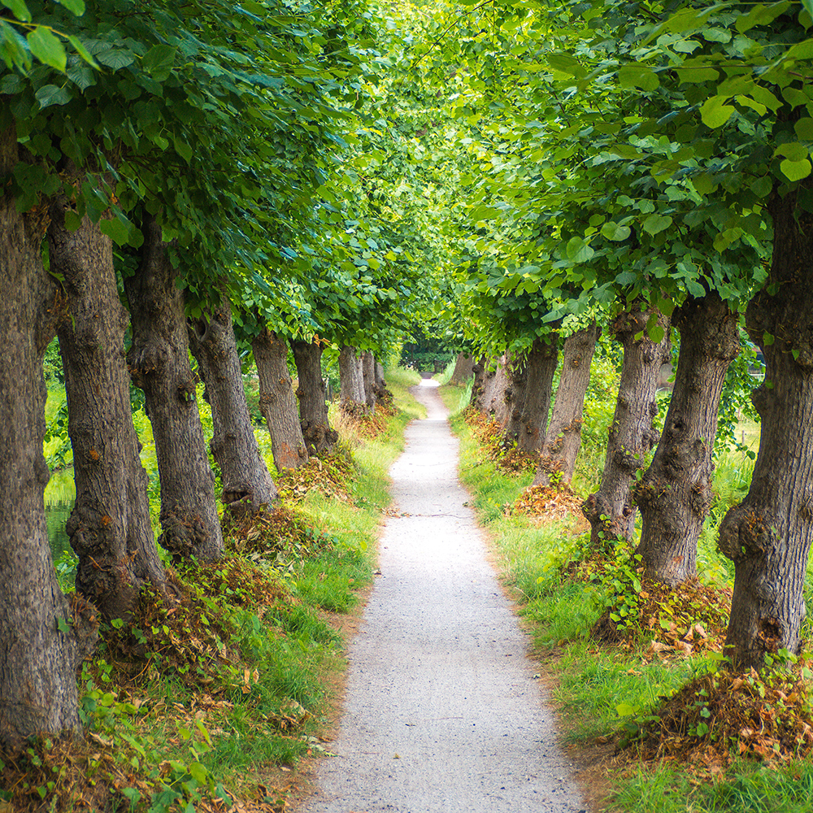

Experts in groen
Met meer dan 60 jaar ervaring in het vak is ons familiebedrijf Schrauwen Groen een betrouwbare partner voor de aanleg en het onderhoud van uw tuin of groenzone. Dit doen we zowel voor particulieren, bedrijven als openbaar bestuur.


Wat doen we?
Wij zijn een betrouwbare partner voor de aanleg en het onderhoud van uw tuin of groenzone

60 jaar ervaring
Wij zijn
Schrauwen Groen
Al sinds 1894 schrijven wij aan ons verhaal. Het verhaal van een familiebedrijf dat gepassioneerd is door groenaanleg en onderhoud. Met een team van meer dan 30 gepassioneerde groenexperten verzorgen wij uw tuin of groenzone.
Waarom Schrauwen Groen?
-
+ 60 jaar
ervaring in het vak

-
Flexibiliteit
team als werk
-
Transparantie
in communicatie & afrekening
-
Kwaliteit
Uitgebreid machinepark + perfect werk
Een perfect aangelegde tuin
Onze totaalaanpak voor uw aanleg
Een van onze specialiteiten is de totaalaanleg van grote en kleine tuinen voor particulieren en bedrijven. Hierbij verzorgen wij alles van ontwerp tot uitvoering, met als resultaat een perfect aangelegde tuin volgens uw wensen en noden. Schrauwen is uw aanspreekpunt van het prille begin tot het feestelijke eindresultaat.
Meer informatie
Schrauwen in beeld
-

Non ut quia magnam
-

Nobis qui aliquam ea sequi natus.
-

Quia debitis hic quis quos accusamus
-

Iste quasi omnis omnis ipsa.
-

Voluptatem eos dicta enim reiciendis
-
Rem suscipit aut dicta placeat.
-

Quis rerum iure. Quo est et. Iste omnis.
-

Ut iusto dolores dolore. Sint voluptatem.
-

Tenetur voluptatem error at.
-
Tenetur voluptatem error at.
Onze werkwijze
Alles gebeurt in onderling overleg en elke beslissing wordt vooraf besproken. We houden u als klant betrokken in het volledige proces en gaan nooit zomaar over tot uitvoering van een project.
Meer informatieDaarom Schrauwen
- 60 jaar ervaring in het vak
- Heel flexibel
- Correcte afrekening
- Uitgebreid machinepark